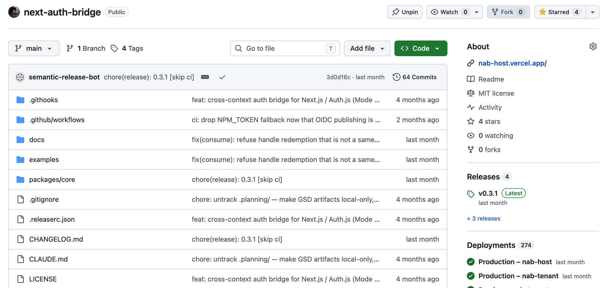

Two Vercel origins + self-hosted Keycloak -- the cross-site handoff is real, not faked on one origin.
Both run on an open-source reference implementation of the pattern -- we'll meet it properly in a few minutes.
Five invariants. Remove one -- the bridge becomes a hole
verify the session first
the ticket is not the key
trust the sender twice
zero tokens in URLs -- for the whole roundtrip
only a same-origin fetch may redeem
Each invariant = one property + one negative test in the reference implementation's threat model
Invariant 01 / 05A Bridge the Token Never Crosses
Verify the session first
Invariant 1 of 5
Verify the session first
// bridge-route.ts -- the real boundary
const origin = request.headers.get("Origin");
if (origin !== null && !allowedOrigins.includes(origin))
return new Response(null, { status: 403 });
// runs before ANY context / wrapper signal is looked at
const session = await verifySession();
if (!session)
return new Response(null, { status: 401 }); // mints nothing
✕without it: anyone who can spoof an "I'm in an iframe" header gets a code for free
Invariant 02 / 05A Bridge the Token Never Crosses
The ticket is not the key
Invariant 2 of 5
The ticket is not the key
256 bits of CSPRNG -- randomBytes(32).toString("hex")
one-time: delete-on-read / atomic GETDEL
TTL ≤ 60 s -- an over-cap TTL throws at construction, no silent clamp
what the store holds: the session cookie value itself -- trust the store like your session DB
1st consume → 302 + partitioned cookie
2nd consume → 4xx, no cookie
Invariant 03 / 05A Bridge the Token Never Crosses
Trust the sender twice
Invariant 3 of 5
Trust the sender twice
window.addEventListener("message", (event) => {
// wrong origin
if (!allowedOrigins.includes(event.origin)) return;
// right origin, wrong window
if (event.source !== popupRef) return;
// … settle the flow with event.data.code
});
wrong origin → dropped
right origin, wrong window -- the same-origin racer → dropped
a dropped message never settles the flow; a later valid one still does
Invariant 04 / 05A Bridge the Token Never Crosses
Zero tokens in URLs -- for the whole roundtrip
Invariant 4 of 5
Zero tokens in URLs -- for the whole roundtrip
client-constructed URL
carries
/auth/popup
nothing
IdP authorize URL
state, PKCE challenge -- owned by your auth library
POST /auth/bridge → body
{ code } only
postMessage payload
{ source, type, code }
/auth/consume?code=…
the opaque code -- the only thing allowed in a URL
per-component tests pass while the composition leaks → the e2e test sweeps every URL the client builds
Invariant 05 / 05 · added after shipping (v0.3.1)A Bridge the Token Never Crosses
Only a same-origin fetch may redeem
Invariant 5 of 5 · added after shipping (v0.3.1)
Only a same-origin fetch may redeem
Login CSRF: attacker mints a code for their session, links the victim to /auth/consume?code=… → victim is signed in as the attacker
Gate on Fetch Metadata: Sec-Fetch-Site: same-origin Sec-Fetch-Dest: empty
navigation / <img> / cross-site fetch → 4xx
store untouched -- the code survives for the real opener
rejection byte-identical to a forged code: no oracle
page script can't set or strip Sec-Fetch-*
The checklist
verify the session first
one-time · ≤ 60 s · 256-bit
origin and source
no token in any URL -- checked at roundtrip level
same-origin-fetch-only redemption
each row ↔ a named, currently-green test in the reference implementation's threat model -- link at the end
What the tests don't prove
On the Node bench
✓Partitioned is emitted ✓data flows end to end ✓every negative case above
Only in a real browser
✓the browser isolates the partition ✓a credentialed fetch commits the cookie under the right top-level site → two live origins, positive + negative case, recorded in live-validation.md
CHIPS: Chrome/Edge 114+ · Firefox 141+ · Safari 26.2+ -- live check run in Chrome
The reference implementation
next-auth-bridge

github.com/azatdavliatshin/ next-auth-bridge
MIT · Auth.js + Better Auth threat model · a negative test per invariant
Adding the bridge to a Next.js app
npm i next-auth-bridge
lib/auth-bridge.ts # the config
app/auth/bridge/route.ts # ③ mint
app/auth/consume/route.ts # ⑤ redeem
app/auth/popup/page.tsx # ①② popup
components/SignIn.tsx # ④ launcher
middleware.ts # UX routing
Six files. Four of them are one-liners.
one config -- store, origins, and the auth-library seam
two routes -- bridge and consume, Web-standard Request → Response
one popup page -- runs top-level, posts the ticket, closes
one launcher -- opens the popup, redeems the ticket, reloads
one middleware -- sends embedded, unauthenticated users to the popup entry
Your auth library's normal sign-in runs on this page first (it's top-level, so it just works); runPopupFlow then calls /auth/bridge and posts { code } to the opener.
gotcha:Cross-Origin-Opener-Policy: same-origin on this page nulls window.opener -- no opener, no message, no bridge
4 · the launcher -- in the iframe
Open, wait for the ticket, redeem, reload
"use client";
import { openAuthPopup, OpenAuthPopupError } from "next-auth-bridge";
export async function signInViaBridge() {
const { code } = await openAuthPopup({ // ① opens /auth/popup
allowedOrigins: [APP_ORIGIN], // ④ checks origin + source
popupUrl: "/auth/popup",
timeoutMs: 60_000,
});
await fetch(`/auth/consume?code=${code}`, { // ⑤ same-origin fetch only
credentials: "include", // → commits the Partitioned cookie
});
window.location.reload(); // the iframe is signed in
}
import { createBridgeMiddleware } from "next-auth-bridge/middleware"; // Edge-safe subpath
import { NextResponse, type NextRequest } from "next/server";
const route = createBridgeMiddleware({
popupEntryPath: "/auth/popup",
isAuthenticated: (req) => // presence of the cookie, not verification
!!req.headers.get("cookie")?.includes(SESSION_COOKIE),
});
export function middleware(request: NextRequest) {
const decision = route(request);
if (decision?.action === "rewrite") return NextResponse.rewrite(decision.destination);
return NextResponse.next();
}
The real gate is verifySession inside /auth/bridge. This only decides which page an embedded, unauthenticated visitor lands on.
Where the same bridge goes next
Web ↔ web
iframe can't see the host's session next door same store · popup + postMessage transport today: lands in a partitioned cookie
Native ↔ web
WebView can't see passkeys, autofill, or the Safari session next door same store · ASWebAuthenticationSession transport the playbook: RFC 8252, OAuth 2.0 for Native Apps
One shape, two transports.
Back to the four constraints
✓
Inherit the existing host SSO
the popup inherits it
✓
Silently
one sub-second flash, no prompt
✓
No token where it can leak
only a 60-second, single-use ticket ever crosses
✓
No vendor lock-in
two libraries, two live demos, two lines
Where the work ended up
the popup-bridge pattern was co-developed with Kirill Evtushenko
working it through became a package -- next-auth-bridge, my generalisation: v0.3.1, months old, no meaningful adoption yet. A reference implementation, not battle-tested infrastructure
clean-room: no employer code; everything on screen is from the public repo and the two Keycloak demos
Рәхмәт!
next-auth-bridge github.com/azatdavliatshin
Telegram t.me/adavliatshin
LinkedIn linkedin.com/in/azat-davliasthin
RFC 8252 where the native half comes from
DevFest Armenia 2026
Appendix
Why not a JWT in the URL / in postMessage?
a token in a URL lives in history, logs, referrers, screenshots
a token in a message payload is a bearer sitting in JS
the code is worthless after one use and 60 seconds; the token is not
CHIPS browser matrix
Chrome/Edge 114+ · Firefox 141+ · Safari 26.2+
Safari: shipped in 18.4, broken in 18.5, back in 26.2 · Firefox: listed in 131, re-enabled in 141
Older Safari: fall back to the Storage Access prompt or a host-level "sign in first" notice.
Store options
createInMemoryTransferStore() -- tests, single instance
TTL cap enforced at construction -- misconfiguration fails loudly
Fetch Metadata fall-through
A request with noSec-Fetch-* headers falls through to the Origin check. Every supported browser sends them, so it can't be triggered from a supported browser; it exists so non-browser clients and the Node bench keep working. A future major may fail closed.
Auth.js status
Auth.js (formerly NextAuth) is effectively in maintenance mode in 2026; ecosystem momentum has moved to Better Auth. The bridge touches either through the same two-value seam.